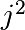

1.4.1. The NumPy array object¶
Section contents
1.4.1.1. What are NumPy and NumPy arrays?¶
NumPy arrays¶
| Python objects: |
|
|---|---|
| NumPy provides: |
|
>>> import numpy as np
>>> a = np.array([0, 1, 2, 3])
>>> a
array([0, 1, 2, 3])
Tip
For example, An array containing:
- values of an experiment/simulation at discrete time steps
- signal recorded by a measurement device, e.g. sound wave
- pixels of an image, grey-level or colour
- 3-D data measured at different X-Y-Z positions, e.g. MRI scan
- …
Why it is useful: Memory-efficient container that provides fast numerical operations.
In [1]: L = range(1000)
In [2]: %timeit [i**2 for i in L]
1000 loops, best of 3: 403 us per loop
In [3]: a = np.arange(1000)
In [4]: %timeit a**2
100000 loops, best of 3: 12.7 us per loop
NumPy Reference documentation¶
On the web: https://numpy.org/doc/
Interactive help:
In [5]: np.array? String Form:<built-in function array> Docstring: array(object, dtype=None, copy=True, order=None, subok=False, ndmin=0, ...
Looking for something:
>>> np.lookfor('create array') Search results for 'create array' --------------------------------- numpy.array Create an array. numpy.memmap Create a memory-map to an array stored in a *binary* file on disk.
In [6]: np.con*? np.concatenate np.conj np.conjugate np.convolve
1.4.1.2. Creating arrays¶
Manual construction of arrays¶
1-D:
>>> a = np.array([0, 1, 2, 3]) >>> a array([0, 1, 2, 3]) >>> a.ndim 1 >>> a.shape (4,) >>> len(a) 4
2-D, 3-D, …:
>>> b = np.array([[0, 1, 2], [3, 4, 5]]) # 2 x 3 array >>> b array([[0, 1, 2], [3, 4, 5]]) >>> b.ndim 2 >>> b.shape (2, 3) >>> len(b) # returns the size of the first dimension 2 >>> c = np.array([[[1], [2]], [[3], [4]]]) >>> c array([[[1], [2]], [[3], [4]]]) >>> c.shape (2, 2, 1)
Exercise: Simple arrays
- Create a simple two dimensional array. First, redo the examples from above. And then create your own: how about odd numbers counting backwards on the first row, and even numbers on the second?
- Use the functions
len(),numpy.shape()on these arrays. How do they relate to each other? And to thendimattribute of the arrays?
Functions for creating arrays¶
Tip
In practice, we rarely enter items one by one…
Evenly spaced:
>>> a = np.arange(10) # 0 .. n-1 (!) >>> a array([0, 1, 2, 3, 4, 5, 6, 7, 8, 9]) >>> b = np.arange(1, 9, 2) # start, end (exclusive), step >>> b array([1, 3, 5, 7])
or by number of points:
>>> c = np.linspace(0, 1, 6) # start, end, num-points >>> c array([0. , 0.2, 0.4, 0.6, 0.8, 1. ]) >>> d = np.linspace(0, 1, 5, endpoint=False) >>> d array([0. , 0.2, 0.4, 0.6, 0.8])
Common arrays:
>>> a = np.ones((3, 3)) # reminder: (3, 3) is a tuple >>> a array([[1., 1., 1.], [1., 1., 1.], [1., 1., 1.]]) >>> b = np.zeros((2, 2)) >>> b array([[0., 0.], [0., 0.]]) >>> c = np.eye(3) >>> c array([[1., 0., 0.], [0., 1., 0.], [0., 0., 1.]]) >>> d = np.diag(np.array([1, 2, 3, 4])) >>> d array([[1, 0, 0, 0], [0, 2, 0, 0], [0, 0, 3, 0], [0, 0, 0, 4]])
np.random: random numbers (Mersenne Twister PRNG):>>> a = np.random.rand(4) # uniform in [0, 1] >>> a array([ 0.95799151, 0.14222247, 0.08777354, 0.51887998]) >>> b = np.random.randn(4) # Gaussian >>> b array([ 0.37544699, -0.11425369, -0.47616538, 1.79664113]) >>> np.random.seed(1234) # Setting the random seed
Exercise: Creating arrays using functions
- Experiment with
arange,linspace,ones,zeros,eyeanddiag. - Create different kinds of arrays with random numbers.
- Try setting the seed before creating an array with random values.
- Look at the function
np.empty. What does it do? When might this be useful?
1.4.1.3. Basic data types¶
You may have noticed that, in some instances, array elements are displayed with
a trailing dot (e.g. 2. vs 2). This is due to a difference in the
data-type used:
>>> a = np.array([1, 2, 3])
>>> a.dtype
dtype('int64')
>>> b = np.array([1., 2., 3.])
>>> b.dtype
dtype('float64')
Tip
Different data-types allow us to store data more compactly in memory, but most of the time we simply work with floating point numbers. Note that, in the example above, NumPy auto-detects the data-type from the input.
You can explicitly specify which data-type you want:
>>> c = np.array([1, 2, 3], dtype=float)
>>> c.dtype
dtype('float64')
The default data type is floating point:
>>> a = np.ones((3, 3))
>>> a.dtype
dtype('float64')
There are also other types:
| Complex: | >>> d = np.array([1+2j, 3+4j, 5+6*1j])
>>> d.dtype
dtype('complex128')
|
|---|---|
| Bool: | >>> e = np.array([True, False, False, True])
>>> e.dtype
dtype('bool')
|
| Strings: | >>> f = np.array(['Bonjour', 'Hello', 'Hallo'])
>>> f.dtype # <--- strings containing max. 7 letters
dtype('S7')
|
| Much more: |
|
1.4.1.4. Basic visualization¶
Now that we have our first data arrays, we are going to visualize them.
Start by launching IPython:
$ ipython # or ipython3 depending on your install
Or the notebook:
$ jupyter notebook
Once IPython has started, enable interactive plots:
>>> %matplotlib
Or, from the notebook, enable plots in the notebook:
>>> %matplotlib inline
The inline is important for the notebook, so that plots are displayed in
the notebook and not in a new window.
Matplotlib is a 2D plotting package. We can import its functions as below:
>>> import matplotlib.pyplot as plt # the tidy way
And then use (note that you have to use show explicitly if you have not enabled interactive plots with %matplotlib):
>>> plt.plot(x, y) # line plot
>>> plt.show() # <-- shows the plot (not needed with interactive plots)
Or, if you have enabled interactive plots with %matplotlib:
>>> plt.plot(x, y) # line plot
- 1D plotting:
>>> x = np.linspace(0, 3, 20)
>>> y = np.linspace(0, 9, 20)
>>> plt.plot(x, y) # line plot
[<matplotlib.lines.Line2D object at ...>]
>>> plt.plot(x, y, 'o') # dot plot
[<matplotlib.lines.Line2D object at ...>]
- 2D arrays (such as images):
>>> image = np.random.rand(30, 30)
>>> plt.imshow(image, cmap=plt.cm.hot)
<matplotlib.image.AxesImage object at ...>
>>> plt.colorbar()
<matplotlib.colorbar.Colorbar object at ...>
See also
More in the: matplotlib chapter
Exercise: Simple visualizations
- Plot some simple arrays: a cosine as a function of time and a 2D matrix.
- Try using the
graycolormap on the 2D matrix.
1.4.1.5. Indexing and slicing¶
The items of an array can be accessed and assigned to the same way as other Python sequences (e.g. lists):
>>> a = np.arange(10)
>>> a
array([0, 1, 2, 3, 4, 5, 6, 7, 8, 9])
>>> a[0], a[2], a[-1]
(0, 2, 9)
Warning
Indices begin at 0, like other Python sequences (and C/C++). In contrast, in Fortran or Matlab, indices begin at 1.
The usual python idiom for reversing a sequence is supported:
>>> a[::-1]
array([9, 8, 7, 6, 5, 4, 3, 2, 1, 0])
For multidimensional arrays, indices are tuples of integers:
>>> a = np.diag(np.arange(3))
>>> a
array([[0, 0, 0],
[0, 1, 0],
[0, 0, 2]])
>>> a[1, 1]
1
>>> a[2, 1] = 10 # third line, second column
>>> a
array([[ 0, 0, 0],
[ 0, 1, 0],
[ 0, 10, 2]])
>>> a[1]
array([0, 1, 0])
Note
- In 2D, the first dimension corresponds to rows, the second to columns.
- for multidimensional
a,a[0]is interpreted by taking all elements in the unspecified dimensions.
Slicing: Arrays, like other Python sequences can also be sliced:
>>> a = np.arange(10)
>>> a
array([0, 1, 2, 3, 4, 5, 6, 7, 8, 9])
>>> a[2:9:3] # [start:end:step]
array([2, 5, 8])
Note that the last index is not included! :
>>> a[:4]
array([0, 1, 2, 3])
All three slice components are not required: by default, start is 0, end is the last and step is 1:
>>> a[1:3]
array([1, 2])
>>> a[::2]
array([0, 2, 4, 6, 8])
>>> a[3:]
array([3, 4, 5, 6, 7, 8, 9])
A small illustrated summary of NumPy indexing and slicing…

You can also combine assignment and slicing:
>>> a = np.arange(10)
>>> a[5:] = 10
>>> a
array([ 0, 1, 2, 3, 4, 10, 10, 10, 10, 10])
>>> b = np.arange(5)
>>> a[5:] = b[::-1]
>>> a
array([0, 1, 2, 3, 4, 4, 3, 2, 1, 0])
Exercise: Indexing and slicing
Try the different flavours of slicing, using
start,endandstep: starting from a linspace, try to obtain odd numbers counting backwards, and even numbers counting forwards.Reproduce the slices in the diagram above. You may use the following expression to create the array:
>>> np.arange(6) + np.arange(0, 51, 10)[:, np.newaxis] array([[ 0, 1, 2, 3, 4, 5], [10, 11, 12, 13, 14, 15], [20, 21, 22, 23, 24, 25], [30, 31, 32, 33, 34, 35], [40, 41, 42, 43, 44, 45], [50, 51, 52, 53, 54, 55]])
Exercise: Array creation
Create the following arrays (with correct data types):
[[1, 1, 1, 1],
[1, 1, 1, 1],
[1, 1, 1, 2],
[1, 6, 1, 1]]
[[0., 0., 0., 0., 0.],
[2., 0., 0., 0., 0.],
[0., 3., 0., 0., 0.],
[0., 0., 4., 0., 0.],
[0., 0., 0., 5., 0.],
[0., 0., 0., 0., 6.]]
Par on course: 3 statements for each
Hint: Individual array elements can be accessed similarly to a list,
e.g. a[1] or a[1, 2].
Hint: Examine the docstring for diag.
Exercise: Tiling for array creation
Skim through the documentation for np.tile, and use this function
to construct the array:
[[4, 3, 4, 3, 4, 3],
[2, 1, 2, 1, 2, 1],
[4, 3, 4, 3, 4, 3],
[2, 1, 2, 1, 2, 1]]
1.4.1.6. Copies and views¶
A slicing operation creates a view on the original array, which is
just a way of accessing array data. Thus the original array is not
copied in memory. You can use np.may_share_memory() to check if two arrays
share the same memory block. Note however, that this uses heuristics and may
give you false positives.
When modifying the view, the original array is modified as well:
>>> a = np.arange(10)
>>> a
array([0, 1, 2, 3, 4, 5, 6, 7, 8, 9])
>>> b = a[::2]
>>> b
array([0, 2, 4, 6, 8])
>>> np.may_share_memory(a, b)
True
>>> b[0] = 12
>>> b
array([12, 2, 4, 6, 8])
>>> a # (!)
array([12, 1, 2, 3, 4, 5, 6, 7, 8, 9])
>>> a = np.arange(10)
>>> c = a[::2].copy() # force a copy
>>> c[0] = 12
>>> a
array([0, 1, 2, 3, 4, 5, 6, 7, 8, 9])
>>> np.may_share_memory(a, c)
False
This behavior can be surprising at first sight… but it allows to save both memory and time.
Worked example: Prime number sieve

Compute prime numbers in 0–99, with a sieve
- Construct a shape (100,) boolean array
is_prime, filled with True in the beginning:
>>> is_prime = np.ones((100,), dtype=bool)
- Cross out 0 and 1 which are not primes:
>>> is_prime[:2] = 0
- For each integer
jstarting from 2, cross out its higher multiples:
>>> N_max = int(np.sqrt(len(is_prime) - 1))
>>> for j in range(2, N_max + 1):
... is_prime[2*j::j] = False
Skim through
help(np.nonzero), and print the prime numbersFollow-up:
- Move the above code into a script file named
prime_sieve.py - Run it to check it works
- Use the optimization suggested in the sieve of Eratosthenes:
- Skip
jwhich are already known to not be primes - The first number to cross out is 
- Move the above code into a script file named
1.4.1.7. Fancy indexing¶
Tip
NumPy arrays can be indexed with slices, but also with boolean or integer arrays (masks). This method is called fancy indexing. It creates copies not views.
Using boolean masks¶
>>> np.random.seed(3)
>>> a = np.random.randint(0, 21, 15)
>>> a
array([10, 3, 8, 0, 19, 10, 11, 9, 10, 6, 0, 20, 12, 7, 14])
>>> (a % 3 == 0)
array([False, True, False, True, False, False, False, True, False,
True, True, False, True, False, False])
>>> mask = (a % 3 == 0)
>>> extract_from_a = a[mask] # or, a[a%3==0]
>>> extract_from_a # extract a sub-array with the mask
array([ 3, 0, 9, 6, 0, 12])
Indexing with a mask can be very useful to assign a new value to a sub-array:
>>> a[a % 3 == 0] = -1
>>> a
array([10, -1, 8, -1, 19, 10, 11, -1, 10, -1, -1, 20, -1, 7, 14])
Indexing with an array of integers¶
>>> a = np.arange(0, 100, 10)
>>> a
array([ 0, 10, 20, 30, 40, 50, 60, 70, 80, 90])
Indexing can be done with an array of integers, where the same index is repeated several time:
>>> a[[2, 3, 2, 4, 2]] # note: [2, 3, 2, 4, 2] is a Python list
array([20, 30, 20, 40, 20])
New values can be assigned with this kind of indexing:
>>> a[[9, 7]] = -100
>>> a
array([ 0, 10, 20, 30, 40, 50, 60, -100, 80, -100])
Tip
When a new array is created by indexing with an array of integers, the new array has the same shape as the array of integers:
>>> a = np.arange(10)
>>> idx = np.array([[3, 4], [9, 7]])
>>> idx.shape
(2, 2)
>>> a[idx]
array([[3, 4],
[9, 7]])
The image below illustrates various fancy indexing applications

Exercise: Fancy indexing
- Again, reproduce the fancy indexing shown in the diagram above.
- Use fancy indexing on the left and array creation on the right to assign values into an array, for instance by setting parts of the array in the diagram above to zero.